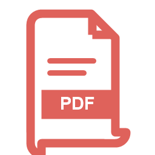

| 開催日 | 大会名 | 会場 | 要項 | 申込書 | 結果 |
|---|---|---|---|---|---|
| 5月28日(木) | 第15回秦野生涯スポーツ振興卓球大会 | メタックス体育館はだの |
 |
〆切 | - |
| 6月21日(日) | 第10回市長杯第59回秦野市会長杯 | メタックス体育館はだの | 〆切 | - | |
| 9月13日(日) | 第31回秦野オープン卓球大会 | メタックス体育館はだの | 〆切 | - | |
| 10月15日(木) | 第31回秦野レディースオープン(D) | メタックス体育館はだの | 〆切 | - | |
| 11月14日(土) | 第1回秦野オープン(団体戦) | メタックス体育館はだの | 〆切 | - | |
| 12月26日(土) | 第72回秦野市卓球選手権(個人戦) | メタックス体育館はだの | - | - |
| 開催日 | 大会名 | 会場 | 要項 | 申込書 | 結果 |
|---|---|---|---|---|---|
| 2月14日(日) | 第55回新春秦野ダブルスオープン(混合D) | メタックス体育館はだの | - | - | - |
| 3月4日(木) | 第12回秦野レディースオープン(T) | メタックス体育館はだの | - | - | - |
※メールによる大会申込み受付は現在準備中です。
運用開始時期が決まり次第、ホームページにてお知らせいたします。
申込書（Excel形式）をメールに添付のうえ、 下記メールアドレスまで送信してください。
協会からの受付完了メールをもって、 申込み完了とさせていただきます。
受付完了メールが届かない場合は、 お手数ですが協会までお問い合わせください。
メールによるお申込みが難しい場合は、 協会までご相談ください。
【大会申込】チーム名_第55回新春秦野ダブルスオープン
秦野市卓球協会 御中
第55回新春秦野ダブルスオープンに申込みいたします。
チーム名：〇〇〇〇〇
担当者名：〇〇 〇〇
申込書を添付いたしますので、ご確認をお願いいたします。